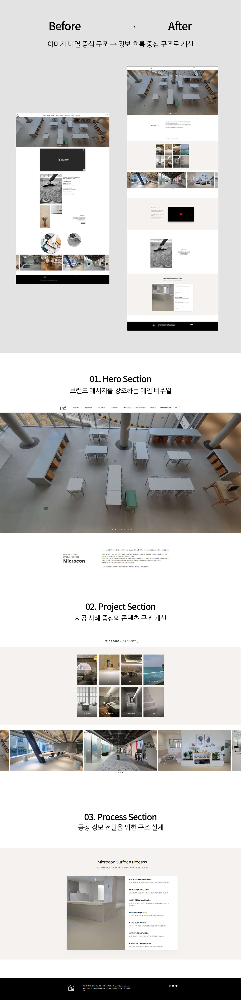
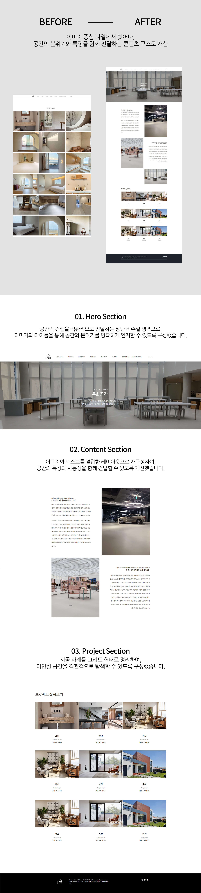

웹디자인 / UX·UI / 브랜드
마이크로콘 웹사이트 리뉴얼
프로젝트 정보
역할
사이트 구조 기획
메인 레이아웃 디자인
콘텐츠 구성 및 흐름 설계
일부 텍스트 방향 기획
연도
2026
유형
실무프로젝트
분야
UX·UI
기여도
100%
프로젝트 개요
마이크로콘 브랜드 사이트 리뉴얼 프로젝트입니다. 기존 사이트는 시공 사례 중심의 이미지 나열 구조로 구성되어 있어, 브랜드의 방향성과 소재에 대한 이해를 전달하기 어려운 한계가 있었습니다. 이를 개선하기 위해 전체 정보 구조를 재정리하고, 브랜드 소개 → 시공 사례 → 소재 이해 → 공정 과정으로 이어지는 흐름을 설계하여 사용자가 자연스럽게 브랜드와 서비스를 이해할 수 있도록 개선했습니다. 또한 다양한 디바이스 환경에서도 일관된 사용자 경험을 제공할 수 있도록 반응형 웹으로 설계 및 제작했습니다.
프로젝트 완성_메인 페이지

프로젝트 완성_카테고리 페이지

주요작업
01. Hero Section : 메인 및 카테고리 상단 비주얼 영역을 재구성하여, 단순 이미지 노출에서 벗어나 브랜드와 공간의 컨셉을 직관적으로 전달하도록 기획했습니다. 02. Project Section : 시공 사례를 카테고리별로 재정리하고, 그리드 및 리스트 구조를 개선하여 콘텐츠 가독성과 탐색 편의성을 높였습니다. 03. Content Section : 카테고리 페이지 내 이미지와 텍스트를 결합한 콘텐츠 구조를 설계하여, 공간의 특징과 분위기를 함께 전달할 수 있도록 구성했습니다. 04. Process Section : 공정 과정을 단계별로 정리하여, 복잡한 시공 정보를 사용자 관점에서 직관적으로 이해할 수 있도록 개선하여 문의로 이어질 수 있도록 유도했습니다.
인사이트
단순한 시공 사례 나열이 아닌, 브랜드와 소재에 대한 이해를 함께 전달하는 구조로 개선함으로써 정보 전달력과 브랜드 인지도를 동시에 강화할 수 있었습니다. 또한 사용자 관점에서 콘텐츠 흐름을 설계하는 것이 사이트의 완성도를 결정짓는 중요한 요소임을 확인할 수 있었습니다.